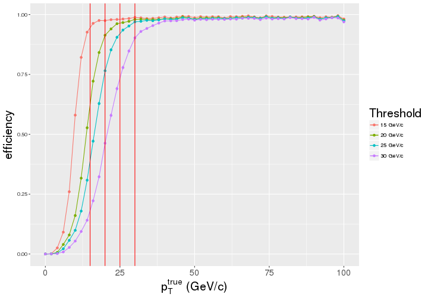
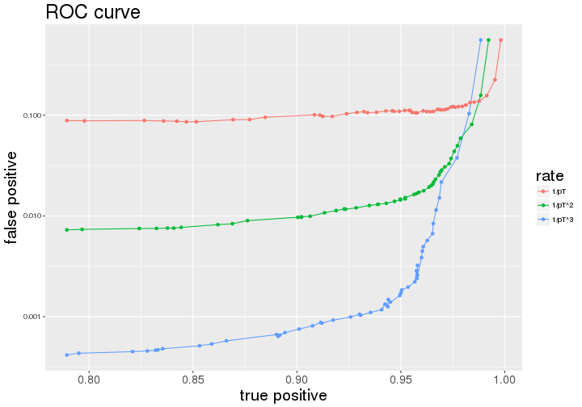
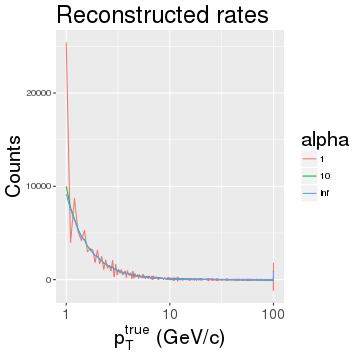

New input data
Metrics
Assessing the true rate
— &twocol
*** =left
*** =right

*** =fullwidth
— .class #id
Turn-on is nothing else but a decision boundary, smeared due to a finite resolution
It is a proportion of events surpassing a given decision threshold in every bin of true pT

— .class #id
For the current system the turn-ons for several thresholds look as follows:

— .class #id
Convolute turn-on (efficiency) with rate and see % of under-the-threshold (false positives) and % of over-the-threshold (true positives) rate accepted for a given threshold
To construct the ROC scan over the threshold and plot false positive vs. true positive rates

— .class #id
Rate assumption has a dramatic effect on how the same performance looks in our system:

— .class #id
The true rate can be measured right from the data with the current system
The measured rate is a convolution of the unknown true rate and known turn-on:
\[ \left\{\begin{array}{lll} R_1 e^1_1 + R_2 e^1_2 + … + R_N e^1_N = r_1 \ … \ R_1 e^M_1 + R_2 e^M_2 + … + R_N e^M_N = r_M \ \end{array} \right., \text{where} \]
The solution in matrix form looks as follows: \(R = e^{-1} r\)
For a step-like turn-on \(e\) is an integrator and \(e^{-1}\) is a differentiator
Unfortunately, inverting the real turn-on matrix turned out to give a highly unstable \(R\)
— .class #id
There may by no high pT muons in MinBias sample \(\rightarrow\) tail is made of promoted muons
Measured rate is more relevant performance parameter than % of false positives
Efficiency right above threshold is a good estimate of % of true positives for vanishing spectra:

— .class #id

New model's rate can be projected using current rate and turn-ons: \(r' = e' R = (e' e^{-1}) r\)
— .class #id
Use ntuples in /store/user/abrinke1/EMTF/Emulator/ntuples/ZeroBiasIsolatedBunch0
With no codebook or a reference to the ntuplizer I cannot make sense of the plots:

Why there are so many events with two seemingly identical tracks? I'll consider 1\(^{st}\) track only.
— &twocol
*** =left
Warning: Removed 15 rows containing missing values (geom_path).
Warning: Removed 15 rows containing missing values (geom_point).

*** =right

*** =fullwidth
New model does better (left plot), but the rate derived from matrix inversion is unstable
— &twocol
Let's take an ideal \(1/p_T^2\) rate shape and \(atan(\alpha(p_T^{true}-p_T^{thresh}+\delta))\) for smooth turn-on
Reconstructing true rate for different turn-on widths I see \(det(turnOn)\) vanishes
*** =left

*** =right

*** =fullwidth
Linear system becomes digenerate when threshold's step approaches the turn-on width
— .class #id
The above problem can be avoided if the rate shape is parameterized with just few handles
Now I am trying our different smooth shapes and numerical minimization of -log likelihood
To be continued …